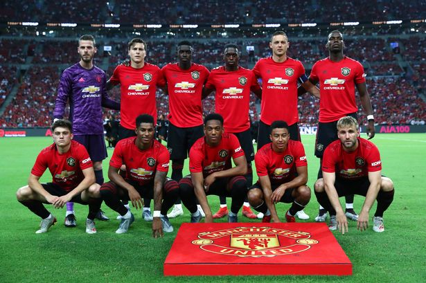

Manchester United sin nettside:United.no
Statistikk 2019 Kamper
| Spilt | Vunnet | Tapt | Uavgjort | |
|---|---|---|---|---|
| Hjemme | 8 | 4 | 1 | 3 |
| Borte | 8 | 2 | 3 | 3 |
Historie
Manchester United Football Club er en engelsk fotballklubb som spiller i Premier League.
Klubben ble stiftet i 1878, under navnet Newton Heath LYR Football Club, og ble valgt inn i
The Football League i 1892.I 1902 fikk klubben sitt nåværende navn. «The Red Devils», som
er kallenavnet til Manchester United, har siden 1910 spilt hjemmekampene sine på Old
Trafford i Manchester.
Manchester United har vunnet den engelske ligaen 20 ganger, som er rekord. De har vunnet
FA-cupen 12 ganger, ligacupen fem ganger og de har også rekorden for vunnede FA
Community Shield med 21 seire, inkludert delinger. Klubben har vunnet Mesterligaen tre
ganger, kun slått av Liverpool FC i England. Samt har de vunnet Europaligaen,
Cupvinnercupen, UEFA Super Cup, Intercontinental Cup og VM i fotball for klubblag en gang.
I 1999 ble Manchester United den første engelske klubben som vant The Treble – Premier
League, FA-cupen og Mesterligaen i samme sesong.